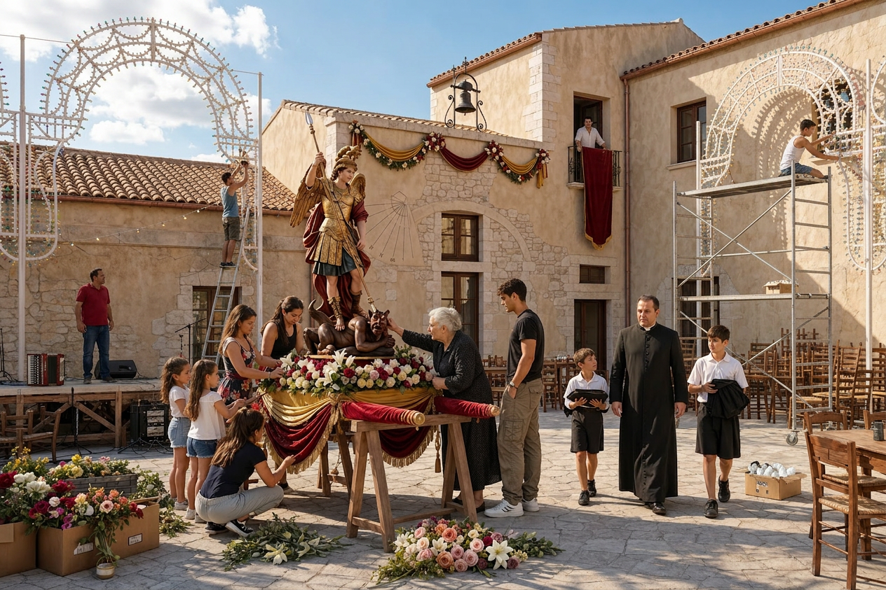
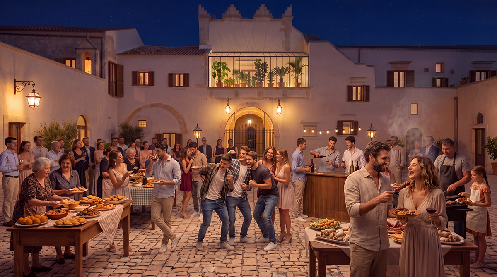

Al Baglio San Michele crediamo che una vera comunità non nasca solo dalle case in cui abitiamo, ma anche e soprattutto dai legami che scegliamo di tessere ogni giorno. Qui, tra le antiche mura della masseria e i campi fertili della contrada, vogliamo costruire qualcosa di vivo e generativo: un luogo dove le famiglie possano crescere in serenità, stabilità e senso di appartenenza, e dove questo senso di appartenenza si apra con naturalezza al territorio che ci circonda per un arricchimento reciproco.
Non immaginiamo una comunità chiusa in sé stessa, ma un luogo che accoglie e si lascia arricchire dalle persone, dalle storie e dai saperi di chi vive intorno a noi. Per questo abbiamo immaginato un insieme di iniziative semplici ma profonde, pensate per far incontrare residenti e abitanti del Ragusano in momenti di condivisione autentica, dove si ride insieme, si ascolta, si impara e si celebra la vita.
Feste periodiche del Baglio e del Territorio

Nel corso dell’anno, il cortile del Baglio si trasforma nel cuore pulsante di feste legate al ritmo della terra e al calendario cristiano. La Festa di San Michele, le celebrazioni del raccolto, i momenti di attesa del Natale o altre ricorrenze care alla tradizione siciliana diventano occasioni per stare insieme.
Bambini che corrono e giocano allegri, anziani che raccontano aneddoti di un tempo, famiglie che si riconoscono intorno a un tavolo comune. Queste feste sono veri momenti di incontro, dove la gioia nasce dalla presenza reciproca e dalla gratitudine per ciò che la Provvidenza ci dona.
Incontri enogastronomici “Memoria e Sapori della Terra Iblea”

Una volta al mese, soprattutto nelle serate primaverili ed estive, apriamo le porte del Baglio per serate di condivisione enogastronomica. Residenti e abitanti del territorio si siedono insieme per gustare ricette tradizionali siciliane preparate con ingredienti del Baglio e delle aziende locali: formaggi caprini, salumi, olio nuovo, erbe aromatiche della macchia iblea, dolci di festa tramandati di generazione in generazione.
Ogni incontro ha un tema e un protagonista: spesso sono le anziane e i contadini del luogo a guidare la serata, raccontando la storia di una ricetta, di un ingrediente, di una memoria familiare. Non è solo cibo che si condivide, ma il senso profondo di una cultura che si tramanda attraverso i gesti quotidiani e l’affetto per la propria terra.
Concerti estivi nel cortile
Nelle sere d’estate il cortile storico del Baglio si riempie di musica. Pochi concerti selezionati, di grande bellezza e semplicità: brani di compositori siciliani, musiche tradizionali eseguite con strumenti acustici, piccole formazioni di musicisti del territorio.
Sotto il cielo stellato, tra le antiche architetture illuminate con discrezione, le note diventano un invito all’ascolto e all’incontro. Famiglie intere, vicini di casa, amici che si ritrovano: un momento di elevazione e di cultura, dove la musica non distrae, ma unisce e fa respirare la bellezza del luogo e delle relazioni che qui si vivono.
Corsi di Memoria e Saperi del Territorio

Uno degli aspetti più preziosi di questa apertura è lo scambio di conoscenze. Abbiamo immaginato corsi e incontri in cui sono gli abitanti del territorio — anziani, artigiani, contadini, detentori di memoria — a insegnare ai residenti del Baglio.
Si parla di storia orale della contrada e delle masserie iblea, di tecniche tradizionali di coltivazione e potatura, di erbe officinali e rimedi antichi, di dialetto e racconti di vita contadina, di lavorazione della pietra e dei materiali del luogo. Si parla di ricette tramandate, di segreti di cucina, di tradizioni gastronomiche, di rituali di famiglia.
Conversazioni vive, occasioni di convivialità in cui chi ha memoria da trasmettere la offre con generosità e chi ascolta la riceve con gratitudine. In questo modo le nuove generazioni che crescono al Baglio non ereditano solo una casa, ma un radicamento autentico nel territorio e nella sua storia.
Un invito a far parte di questa comunità
Queste iniziative nascono dal desiderio sincero di non vivere isolati, ma di essere parte viva di un territorio che ha ancora tanto da donare e da ricevere. Crediamo che la vera forza di un luogo stia nella qualità delle relazioni che sa generare: tra famiglie, tra generazioni, tra chi abita stabilmente il Baglio e chi lo circonda con la propria vita e il proprio lavoro.
Se anche voi sentite il richiamo di una vita più lenta, più autentica e più radicata, se desiderate condividere saperi, memorie e momenti di bellezza con persone che scelgono di stare insieme con serietà e gioia, vi invitiamo a scoprire il Baglio San Michele.
Qui non cerchiamo solo abitanti: cerchiamo compagni di viaggio, pronti a tessere insieme una comunità che sia davvero casa per tutti.